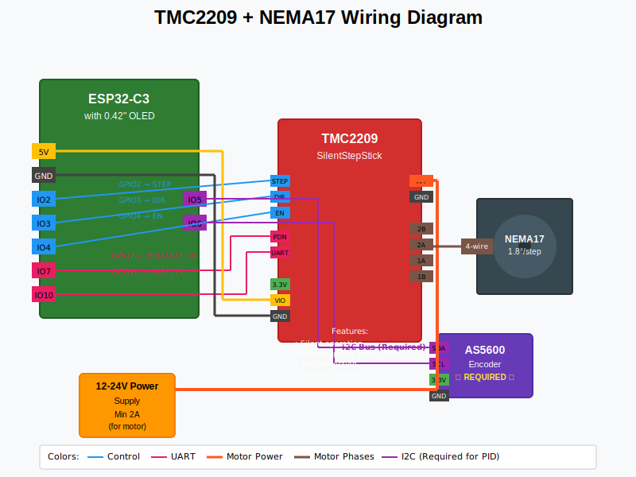

Configuration Options¶
The ESP32-C3 Filter Wheel Controller supports two different motor driver configurations, each with its own advantages and use cases.
Configuration Overview¶
| Feature | ULN2003 + 28BYJ-48 | TMC2209 + NEMA17 |
|---|---|---|
| Cost | $8-15 | $25-40 |
| Complexity | Beginner | Intermediate |
| Performance | Good | Excellent |
| Noise Level | Moderate | Silent |
| Precision | ±0.2° | ±0.05° |
| Speed | Up to 500 steps/sec | Up to 5000 steps/sec |
| Power | 5V, <300mA | 12-24V, 1-3A |
Configuration 1: ULN2003 + 28BYJ-48 (Recommended for Beginners)¶

Advantages¶
- Low cost - Complete driver + motor kit for under $10
- Simple wiring - Direct GPIO connections
- 5V operation - Can be powered from USB (with limitations)
- Easy to source - Available worldwide
- Proven design - Widely used in astronomy community
Disadvantages¶
- Moderate noise - Audible stepping
- Limited speed - Maximum ~500 steps/second
- Less precision - Basic positioning without microstepping
- Power consumption - Motor stays energized
Best For¶
- First-time builders
- Budget-conscious projects
- Educational use
- Small/lightweight filter wheels
- Desktop use where noise is acceptable
Components Required¶
- ESP32-C3 development board
- ULN2003 driver board
- 28BYJ-48 stepper motor (5V)
- 0.42" OLED display
- AS5600 encoder (optional)
- Basic wiring materials
Configuration 2: TMC2209 + NEMA17 (Professional Grade)¶

Advantages¶
- Silent operation - Nearly inaudible stepping
- High precision - Microstepping up to 256 steps/full step
- Fast movement - Up to 5000+ steps/second
- Advanced features - Stall detection, current control
- Professional quality - Industrial-grade components
Disadvantages¶
- Higher cost - $25-40 for driver + motor
- Complex wiring - Requires UART configuration
- Higher power - 12-24V supply needed
- Advanced setup - Requires more technical knowledge
Best For¶
- Professional observatories
- High-precision applications
- Remote/robotic operation
- Low-noise environments
- Heavy filter wheels requiring more torque
Components Required¶
- ESP32-C3 development board
- TMC2209 SilentStepStick
- NEMA17 bipolar stepper motor
- 12-24V power supply (2A minimum)
- 0.42" OLED display
- AS5600 encoder (recommended)
- Professional wiring materials
Choosing Your Configuration¶
Choose ULN2003 + 28BYJ-48 if:¶
- ✅ You're new to electronics
- ✅ Budget is under $50
- ✅ Building a desktop setup
- ✅ Want quick results
- ✅ Noise isn't critical
Choose TMC2209 + NEMA17 if:¶
- ✅ You have electronics experience
- ✅ Budget allows $100+
- ✅ Need silent operation
- ✅ Require maximum precision
- ✅ Building permanent observatory setup
Configuration in Code¶
To select your configuration, edit src/config.h:
For ULN2003 Configuration:¶
// Select motor driver type (uncomment only one)
#define MOTOR_DRIVER_ULN2003 // ULN2003 with 28BYJ-48 stepper
//#define MOTOR_DRIVER_TMC2209 // TMC2209 with NEMA17
For TMC2209 Configuration:¶
// Select motor driver type (uncomment only one)
//#define MOTOR_DRIVER_ULN2003 // ULN2003 with 28BYJ-48 stepper
#define MOTOR_DRIVER_TMC2209 // TMC2209 with NEMA17
The system will automatically configure pins, timing, and features based on your selection.
Next Steps¶
Choose your configuration and proceed to the specific assembly guide:
- ULN2003 Assembly Guide - Step-by-step for beginners
- TMC2209 Assembly Guide - Professional configuration
Both configurations share the same: - Firmware (automatically adapts) - ASCOM driver - Serial commands - Display interface - Optional encoder support